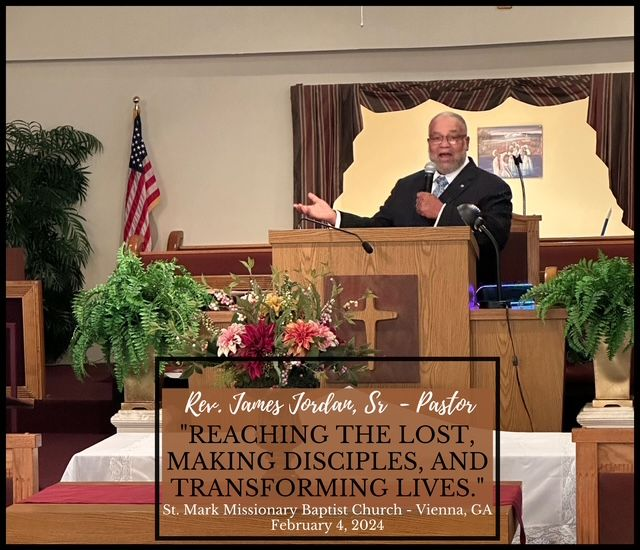

Reaching the Lost, Making Disciples, and Transforming Lives.
“Reaching the Lost, Making Disciples, and Transforming Lives.”

Rev. James E. Jordan Sr. is a family man who loves God and His people. A native of Vienna, Georgia, he attended Vienna High and Industrial School and Fort Valley State College.
He served in the United States Army as a Demolition Specialist, earning the rank of Sergeant. Following his military service, he worked as a Logistics Manager for the United States Postal Service for 23 years before retiring in 2014.
His theological education includes studies at Atlanta Christian College, the Interdenominational Theological Center (ITC), and Liberty University.
He was licensed into Christian Ministry in January 2006 and ordained in May 2010 at The Greater Solid Rock Baptist Church in Atlanta, Georgia.
Rev. Jordan married Ava Johnson on June 18, 1983. They reside in Peachtree City, Georgia, and co-lead Blessed Success Ministries.
His ministry focuses on teaching, preaching, and engaging others toward discipleship while following Jesus Christ’s commandments to love God and love one’s neighbor.
“Man’s love is always and only a response to God’s love.”
First Lady Ava Felicia Jordan was born on July 23, 1959, in Atlanta, Georgia, to Rev. Raymond and Gayle Johnson.
She graduated from Talladega College, where she studied Economics and Business Administration. She earned a master’s degree in Organizational Psychology from Capella University and pursued Biblical Studies and Theology at the Interdenominational Theological Center (ITC).
She served in Georgia state government before retiring in July 2019.
First Lady Jordan is an ordained minister of Blessed Success Ministries, Inc., which she co-leads alongside her husband. Her ministry focuses on community outreach, biblical teaching, encouragement, and life-skills coaching.